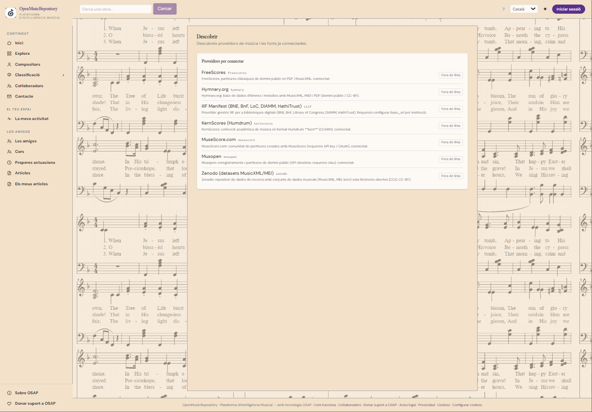
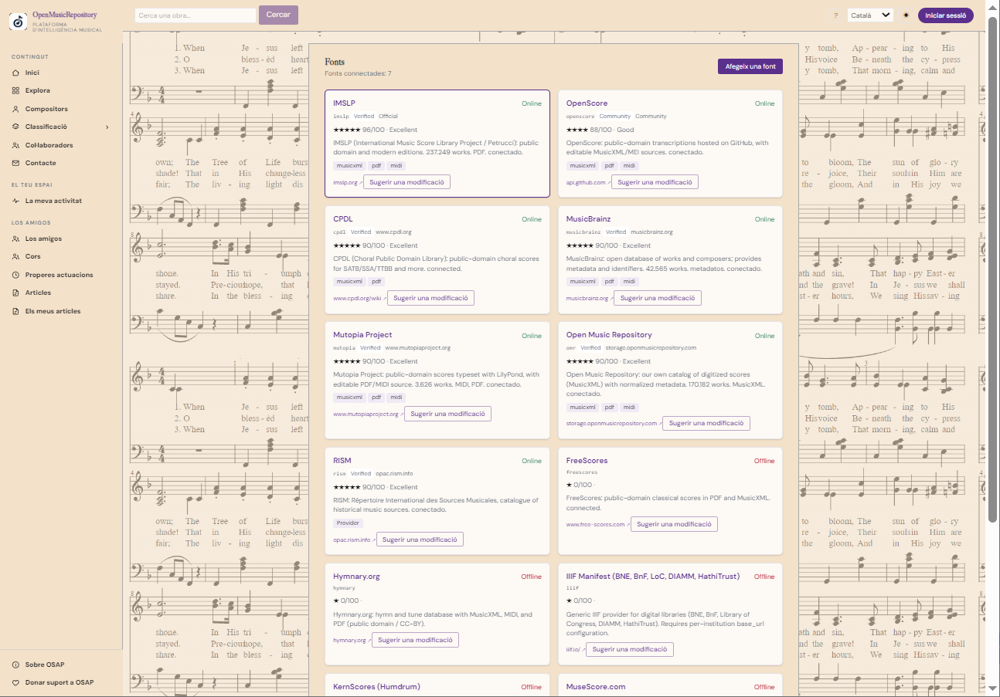

Guia del manual
Fonts, proveïdors i formats
Entén d’on prové la informació, què signifiquen els formats i com obrir el material des de la seva font.
1. Què és una font?
Una font és un catàleg, repositori o servei extern del qual OSAP obté informació sobre obres i recursos. OSAP reuneix i relaciona dades de diverses fonts perquè puguis cercar des d’un únic lloc, però no substitueix el repositori original.
Al catàleg pots veure les fonts disponibles, informació sobre les seves capacitats, documentació i els formats que declaren oferir. L’estat de connexió pot canviar amb el temps.
2. Principals fonts musicals
OSAP reuneix referències de diversos catàlegs i repositoris perquè puguis localitzar obres i les seves representacions des d’un únic cercador. Cada font té un abast, unes condicions d’ús i unes possibilitats tècniques diferents. Que una obra aparegui a OSAP no vol dir que tots els seus fitxers s’hi allotgin ni que es puguin obrir directament al visor.
| Font | Què hi pots trobar | Cost i condicions | Accés des d’OSAP |
|---|---|---|---|
| IMSLP / Petrucci Music Library | Partitures de música clàssica, edicions històriques, obres completes i, en alguns casos, enregistraments i altres materials. | Molt contingut és gratuït. Les restriccions d’accés i els drets depenen de cada fitxer i de la jurisdicció; no donis per fet que tot és de domini públic a tots els països. | OSAP utilitza aquesta font com a referència externa: el fitxer no se serveix des del repositori propi d’OSAP. Per consultar o descarregar la partitura, segueix l’enllaç a IMSLP; les restriccions d’accés poden dependre del fitxer i del país. |
| Mutopia Project | Edicions de partitures preparades per col·laboradors, normalment en PDF, codi font LilyPond i MIDI. | Descàrrega gratuïta. Les peces es publiquen al domini públic o amb llicències obertes indicades a cada fitxa; revisa la llicència concreta abans de reutilitzar-les. | La disponibilitat a OSAP depèn de la representació incorporada i de l’estat del recurs. Si hi ha un enllaç extern, s’obre a la font original. |
| CPDL / ChoralWiki | Repertori coral i vocal, amb partitures, edicions i materials de suport per a cantants i directors. | Accés generalment gratuït. Les llicències poden variar entre edicions i els recursos allotjats en llocs externs poden tenir condicions diferents. | OSAP conserva referències a obres de CPDL, però actualment no té accés directe als seus fitxers des del repositori propi: els recursos de CPDL no es poden obrir ni descarregar des d’OSAP. Cal anar a ChoralWiki per consultar la partitura original. |
| OMR (Open Music Repository) | Repositori de partitures digitals integrat a OSAP, amb contingut orientat a l’anàlisi musical i recursos en formats com MusicXML/MXL i altres fitxers associats quan estan disponibles. | L’accés als recursos d’OSAP depèn de la seva disponibilitat. Les condicions de reutilització depenen de la llicència i dels drets de cada obra o fitxer; que sigui al repositori no vol dir que tot es pugui redistribuir lliurement. | OMR és el repositori propi integrat a OSAP. Els recursos s’obren des de les representacions del catàleg; el visor apareix quan el fitxer és accessible i el format és compatible. |
Consulta també les pàgines originals per conèixer les condicions vigents: llicències d’IMSLP, llicències de Mutopia, llicència de CPDL Els recursos que provenen de PDMX es consulten com a part d’OMR dins d’OSAP.
Què vol dir «accés directe» a OSAP?
A OSAP cal distingir tres situacions: **referència externa**, quan la fitxa porta a la pàgina del proveïdor (com IMSLP); **referència sense fitxer disponible a OSAP**, com passa actualment amb CPDL; i **repositori integrat a OSAP**, com OMR, que es consulta des de les representacions disponibles al catàleg. Fins i tot en un repositori integrat, el visor només apareix si el fitxer és accessible i el format es pot convertir a un format compatible.
3. Formats habituals
| Format | Què conté | Ús habitual |
|---|---|---|
| Document amb pàgines, sovint una partitura escanejada o digital. | Llegir, imprimir o desar la partitura. | |
| MusicXML / MXL | Notació musical estructurada, sense comprimir o comprimida. | Obrir o editar en programes compatibles amb partitures. |
| MIDI | Informació de notes, temps i esdeveniments musicals; normalment no inclou la imatge d’una partitura. | Reproduir, analitzar o importar en un seqüenciador. |
| Imagen | Pàgina o pàgines escanejades. | Consultar una reproducció visual; el text musical pot no ser seleccionable. |
| Sibelius, Finale, Guitar Pro i altres formats de programa | Fitxers natius o específics d’una aplicació. | Editar amb el programa compatible; la lectura depèn del format i de la versió. |
| Audio | Enregistrament sonor. | Escoltar; no equival a una partitura editable. |
4. Obrir o descarregar un recurs
En una fitxa, localitza la representació que t’interessa i revisa el proveïdor i el format. Utilitza l’acció disponible per veure, descarregar o obrir la font. Si el recurs no s’obre, pot ser que el proveïdor no estigui disponible temporalment, que el fitxer s’hagi retirat o que calgui un compte extern.
Quan surtis d’OSAP per visitar la font, s’aplicaran les condicions d’aquell lloc. Revisa’n la llicència i les restriccions d’ús abans de redistribuir o publicar un fitxer.
5. Catàleg de fonts i fonts connectades


El Catàleg de fonts presenta informació més detallada de cada proveïdor, com ara les seves capacitats, documentació, formats i catàlegs. La secció Fonts mostra fonts conegudes o connectades i pot oferir un formulari per suggerir-ne una de nova.
Si proposes una font, utilitza’n el nom reconeixible i una adreça web estable. Quan el formulari demani el tipus o la ubicació, indica la classe de repositori i l’URL de la pàgina oficial, l’API o el manifest que la identifiqui. L’acceptació d’una proposta no vol dir que la integració tècnica s’activi automàticament.